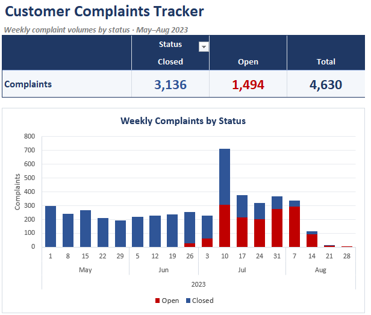

Customer complaints tracker
The problem
A raw export of customer complaints lists every case individually, with its product, issue, submission channel and current status. As a list it can't answer the questions a manager actually asks: how many complaints are still open, how volumes are changing week to week, and whether the backlog is growing.
What I did
I prepared the raw export into a clean working dataset, adding week, month and year columns so complaints could be grouped by the week they were received. From that I built a one-page report driven by PivotTables, with:
- A summary of closed, open and total complaints, with open cases highlighted in red
- A stacked weekly column chart splitting each week's complaints by status
- A timeline filter on week start date, so the whole report can be narrowed to any period

The result
A tracker that shows at a glance where complaints are being resolved and where they are building up. In this data it makes the July spike, and the growing share of recent complaints still open, stand out immediately, which is exactly the kind of early warning a team needs to prioritise its workload.